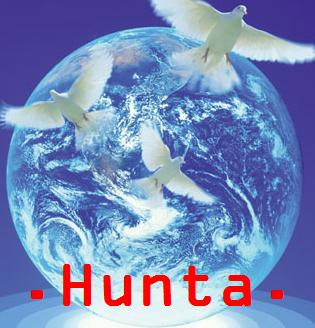

Forums galactiques > Assemblée Galactique : diplomatie officielle > Le Vrai Espoir d'Esperance[rp]
Pages : 1
| Général Victa Respect diplomatique : 364  29/06 ETU 13:34  | Score : 6 Détails Rp privé,Sont autorisé ici que ceux qui viennent pour parler de la paix ,merci de ne pas venir faire son boulet.
Sur la place verdoyante de la capitale se trouve un démon qui vient de monter sur une chaise. Ce démon prit alors des feuilles qu'il avait déposer à terre pour pouvoir monter. Humains,animaux,monstres,végétal et autres. Bonjour à tous citoyens d'Esperance. Je vous ai réunis pour un projet que j'avais avant que je tombe dans la folie meurtrière dans laquelle j'étais. Commandants et commandantes ,pourquoi avoir des armes? Pour envahir des peuples qui n'ont rien demander?Pour ce faire la guerre entre nous et massacré nos peuples? Ces armes n'apportent que mort inutiles dans les cimetières nombreux d'Espérance,ces peuples n'ont pas demandé à mourir ,mais nous les envoyons à la mort. C'est pourquoi ,commandants d'Espérance,Pour que tout les peuples soit en paix. Je vous demande dès aujourd'hui dans but commun de s'unir dans la paix. De ne plus attaquer les planètes des peuples,de ne plus faire de morts...Il est bien difficile de le faire me dirait vous? Quand j'ai abandonné ma folie ,on m'a traité de lâche,mais non commandant d'Espérance,je suis certes un lâche,mais j'ai fait sa pour la survit de mon peuple. Certains préfère sacrifier leurs peuples pour montrer leur pouvoir et leur puissance,mais sans leurs peuples ils ne sont rien ,nous sommes tous rien sans eux. Écoutez vos peuples désormais,écouter leurs cris de douleur ,leurs cris tout simplement. Vos peuples vivent t'ils bien en Espérance aujourd'hui? Ces peuples avant notre arrivé vivaient en paix ensemble ,ils étaient pas tous amis certes,mais ils se respectaient ,ils n'auraient jamais tuer un autre . C'est pourquoi je vous demande de redonner la liberté à ces peuples et/ou d'abandonner vos armes. Pour le bien d'Espérance,la violence n'a que trop durer ,il faut maintenant arrêter et se diriger vers la paix. Pour que le vrai espoir de cette galaxie puisse exister. Cordialement Hunta. Hrp//Merci à celui qui m'a corriger quelque fautes d'orthographes. | ||
| anonymations Respect diplomatique : 159  29/06 ETU 18:27 | Score : 4 Détails Light qui avait écouté le discours de Hunta assit sur le tronc pourris d'un arbre mort, se mit en évidence pour qu'il puisse être entendu.
Cher Hunta, Je trouve votre discours des plus faciles. C'est vrai qu'après avoir tout perdu dans un grand élan de folie, c'est assé basique de nous sortir un discours de paix. Je vous regardais d'un autre oeil quand vous étiez encore un "pacifiste". Après votre déclaration de guerre, je me suis dis "Encore un suicidaire !", mais je ne m'imaginais pas qu'à aucun moment la suite des évènements allait prendre des tournures pareil. Oser défier espérance et cracher sur son honneur sachant que la défaite était assurée pour votre part. Ensuite vous nous faites le discours du gentil bonhomme avec ces idées de paix qui veut se refaire des ami(e)s en espérant se refaire une puissance et essuyer un nouvel Echec ! Vous avez énormément baissé dans mon estime et jamais ma confiance ne vous sera accordée. Quoi que vous dites, rien n'y changera. Ensuite Light alla reprendre sa place, attendant une réponse douteuse et non sûr de son interlocuteur. | ||
| Général Victa Respect diplomatique : 364 29/06 ETU 18:41 | Score : 4 Détails Hunta salua l'individu et se leva du siége où il venait de se mettre assit.
Si j'ai tout perdu,c'est par ma volonté,car je ne voulais pas avoir ni d'armes et ni de peuples à dériger,la raison est simple ,je vais vous expliquer. J'étais et je suis encore pacifique. Mais vous connaissez le mal que chaques habitants de cette galaxie à en lui ,sans une petite partie de mal ,il ne peut être bon. Hélas cette partie de mal et chez moi trés grande,on peut lutter contre elle mais on ne peut la vaincre totalement. Mais je me suis fait manipuler par ma femme corti,et le mal à pris le deçu sur le bien ,je ne réflechissait pas,tout ce qui comptez était de souffrir. Oui,je vous ai trahi certes mais j'ai en moi deux personalitée comme le wing et le wang. Ma grande partie du mal ne peut plus avoir emprise sur moi car je n'ai plus rien qu'elle peut controler . Oui ,le mal dors en moi ,il pourrait à tout moment ressurgir ,mais il n'aurait rien pour abboutir à son but et terminerait à retomber dans l'oubli,laissant le bien revenir. Ma femme corti ne m'a pas arrangé les choses,vous étes pas sans savoir que les cronos sont trés manipulateur et peuvent changer les gens. Aujourd'hui ,je crois en une paix ,en une libertée de tous les peuples et au pacifisme,ces buts m'aident à maintenir la bonne partie en moi. Que Corti ne soit plus ma femme et ne met plus sous sa main est aussi bien pour moi. Croyez vous que dieu aimerez voir ces créations se battrent entre elles?Je ne pense pas,faisons honneur à notre créateur et nous nous tuons pas inutilement. Ps:si j'ai tout abbandonné ,c'est surement pas pour me refaire une puissance. | ||
| anonymations Respect diplomatique : 159 29/06 ETU 19:01 | Score : 3 Détails Je trouve vos dires pitoyable. S'affirmer pacifiste et entreprendre un acte de destruction MASSIVE, sur qui plus est, des innocents ! De pauvre commandant sans beaucoup de défense demandant seulement à évoluer correctement. Sur ce point-ci vous serez impardonnable. Avant ce genre de plan, il faut toujours s'imaginer comment aurait-on réagi à leurs places. En plus vous nous inciter à arrêter toute guerre après le nombre incalculable de décès organisés par VOTRE FAUTE.
A votre place j'aurais attendu patiemment mon heure afin que je ne puisse pas me lamenter sur mes horribles faits. Je ne vous plaint vraiment pas ! | ||
| Général Victa Respect diplomatique : 364 30/06 ETU 08:53 | Score : 1 Détails Hunta prit un grand souffle d'air et répondi.
Quelqu'un qui n'a jamais fait la guerre connait t'il contre quoi ce qu'il se bat? C'est t'il se que cela fait? Je suis passé par une guerre et je sais maintenant car je suis passé par là que la paix est essentiel. De plus sortez avec une cronos ou soyez l'éléve d'un cronos,vous verrez que vous changerez rapidement car ces gens ont le dont de changer le caractére et de refouler le mal qui est dans les commandants. Oui ,j'ai fait plein de décès mais d'autre comme moi sont maintenant des peuples pacifiste mais n'ont t'il pas eux aussi une fois dans leur vie de commandant créer des morts? N'avez vous jamais creer des morts en envahisant des planétes certe dites vierges,mais où des habitants habitent. Tout peuple pacifiste à au départ massacré des peuples pour en être où il en est au niveau de son territoire. Ne me jugez donc pas moi qui à rendu la liberté à tout ces peuples car vous n'étes pas mieu que moi,car vous aussi en colonisant des planétes ,vous avez massacré des peuples. Maintenant je ne posséde presque plus grand chose à part mon transport amélioré,suis je malheureux pour autant? Non car je ne peux plus faire de mal à personne,le mal n'a plus rien sur quoi prendre l'emprisse. Tout le monde à commis des meutres en colonisant avant de devenir pacifiste ou combattant. Cordialement Hunta. |
Pages : 1
Forums galactiques > Assemblée Galactique : diplomatie officielle > Le Vrai Espoir d'Esperance[rp]